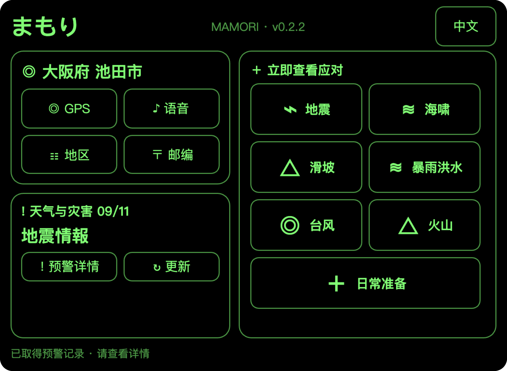
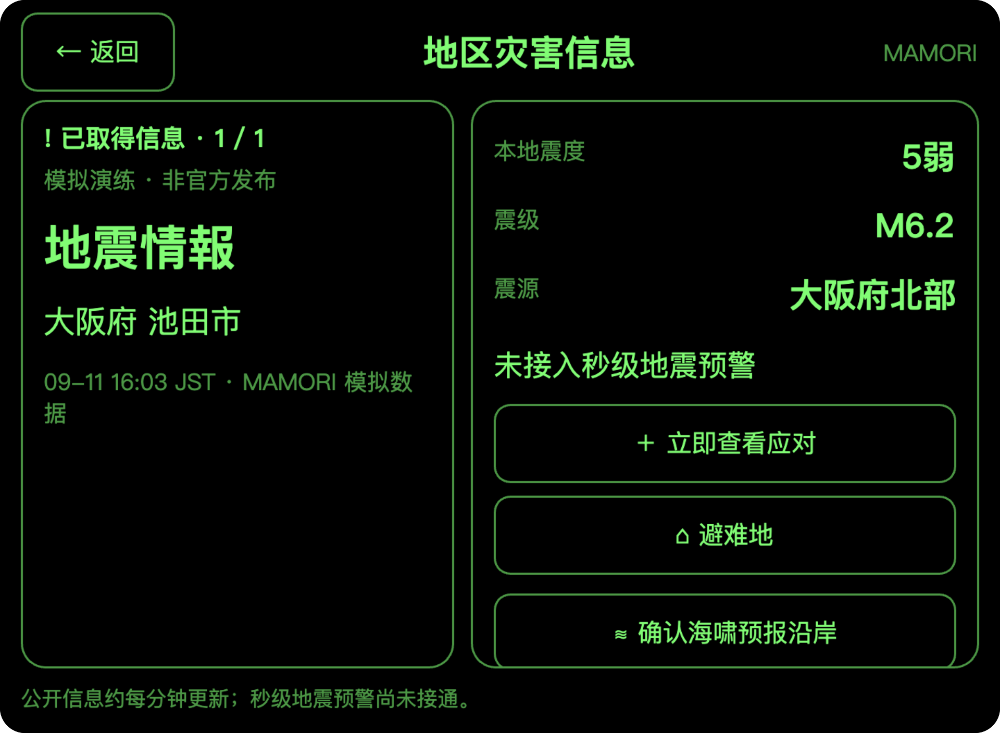
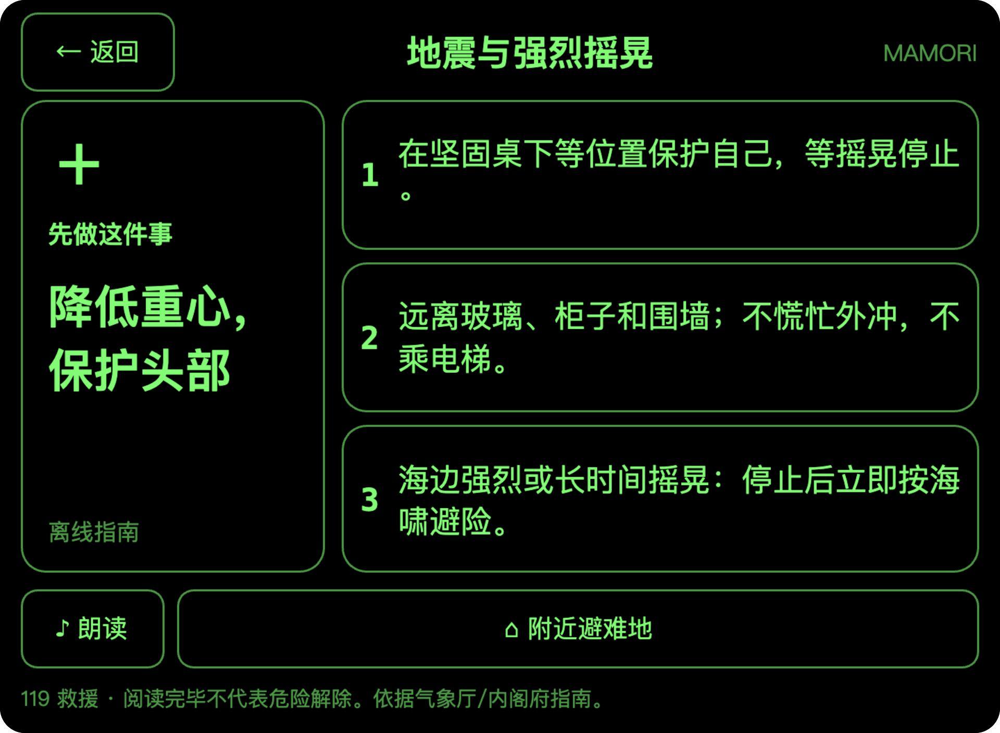

守
まもり MAMORIRokid Glasses 日本防灾智能体
真实 Ink 页面渲染截图
产品演示 / 全部情境与数据均为模拟
产品演示 / 全部情境与数据均为模拟
日常看天气，震时先护身。
从所在地天气，到地震信息与一屏应对。
大阪府池田市
无灾害 · 日常情境
天气与日常准备
1 · 日常首页天气数据为演练设定
先确认位置，再看天气
大阪府池田市 · 晴 · 日间最高 28℃
七类应对指南，日常即可查看。
地震发生 · 模拟情境
首页提示 → 灾害详情 → 应对行动
天气卡切换为灾害提示
隐藏气温与降水数值，显示灾害名称。
所在地与七类应对入口保留。

查看地震信息
震度、震级与震源分开呈现。
查看对应信息后，可进入应对指南。

降低重心，保护头部
先保护自己；摇晃停止后，再查看信息与避难地点。
把信息读清楚，把下一步看明白。
日常首页→灾害首页→灾害详情→行动指南